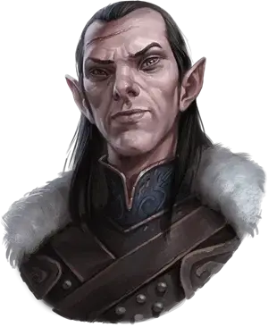

Рахадин
Rahadin
Средний Гуманоид (Эльф), законно-злой, именной НИП

Класс Доспеха 18 (проклёпанный кожаный доспех)
Хиты 135 (18к8 + 54)
Скорость 35 футов
| мод | спас | ||
|---|---|---|---|
| СИЛ | 14 | +2 | +2 |
| ЛОВ | 22 | +6 | +6 |
| ТЕЛ | 17 | +3 | +7 |
| мод | спас | ||
|---|---|---|---|
| ИНТ | 15 | +2 | +2 |
| МДР | 16 | +3 | +7 |
| ХАР | 18 | +4 | +4 |
Навыки Восприятие +11, Запугивание +12, Обман +8, Проницательность +7, Скрытность +14
Чувства тёмное зрение 60 футов, пассивное Восприятие 21
Языки Общий, Эльфийский
Опасность 10 (5900 опыта)
Бонус мастерства +4
Особенности
Хор Мертвых. Любое существо, находящееся в радиусе 10 футов от Рахадина и не защищено заклинанием сокрытие разума [mind blank] слышит голоса тысяч людей, убитых Рахадином. В качестве бонусного действия, Рахадин может заставить всех персонажей, слышащих крики, совершить спасбросок Мудрости Сл 16. Каждое существо получает 16 (3к10) урона психической энергией если провалило бросок, или половину, если успешно его прошло.
Наследие фей. Рахадин получает преимущество на спасброски от очарования и его невозможно усыпить магическим образом.
Врождённое колдовство. Врожденное колдовство Рахадина основано на Интеллекте. Следующие заклинания не требует компонентов:
• 3/день: туманный шаг [misty step], призрачный скакун [phantom steed]
• 1/день: магическое оружие [magic weapon], необнаружимость [nondetection]
Маскировка в дикой местности. Рахадин может спрятаться, даже если он слабо заслонен листвой, сильным дождём, снегопадом, туманом или другими природными явлениями.
Черты Рахадина.
Идеал. «Верность превыше всего».
Привязанность. «Я сын Короля Барова фон Заровича, и я буду служить его сыну – моему брату и хозяину, вечно».
Слабость. «Ради сохранения наследия фон Заровичей я убил тысячи людей. И убью еще больше».
Действия
Мультиатака. Рахадин совершает три атаки своим скимитаром, или две отравленными дротиками.
Скимитар. Рукопашная атака оружием: +10 к попаданию, досягаемость 5 фт., одна цель. Попадание: 9 (1к6 + 6) рубящий урон.
Отравленный дротик. Дальнобойная атака оружием: +10 к попаданию, дистанция 20/60 фт., одна цель. Попадание: 8 (1к4 + 6) колющий урон плюс 5 (2к4) урона ядом.
Описание
Рахадин – сумеречный эльф-камердинер Замка Равенлофт на протяжении вот уже почти пятисот лет верой и правдой служит семье Страда. Он вечный слуга Страда, давний товарищ по оружию и безжалостный воин, убивавший тысячи раз за свою жизнь.
Изгнанник. Рахадин был изгнан за отказ поклонится темному эльфу – принцу, которого он считал слабым и продажным. Позже, когда сумеречные эльфы отказались присягнуть на верность Королю Барову, Рахадин помог Барову победить их. Правящая династия эльфийского королевства была уничтожена, а на темных эльфов охотились как на кроликов. Те немногие, кто выжил, были либо обращены в рабство, либо были вынуждены жить среди вистани. Баров был так доволен Рахадином, что в итоге сделал его почетным членом семьи.
Камердинер. После смерти Барова, Рахадин продолжил сражаться за Страда, как один из его генералов. Когда войны закончились и Страд обратил свое внимание на строительство замка Равенлофт, Рахадин проследил за тем, чтобы в Баровию прибыло множество волшебников и мастеров. Спустя годы Страд назначил Рахадина управляющим замком. Рахадин был рад делать то, о чем его просит Страд.
Он наводил ужас на слуг замка, регулярно подвергая порке тех, кто не выполнял свои обязанности в соответствии с его строгими стандартами. Когда сумеречный эльф по имени Патрина Великовна [Patrina Velikovna] постучалась в двери Страда, Рахадин заметил, что она заинтриговала Страда, но её мотивы показались ему подозрительны. Патрина пыталась соблазнить Страда перспективой бессмертия – именно того, чего Страд желал больше всего на свете. Она рассказала ему о хранилище запретных знаний под названием Янтарный храм, где был скрыт секрет обретения бессмертия. В то время, как Страд занимался изучением храма, Рахадин принял на себя все дела своего хозяина, а также начал искать женщину, которая смогла бы оторвать Страда от Патрины Великовны. В этом он потерпел неудачу. Однако, цель была выполнена, когда Сергей – брат Страда, нашел Татьяну.
Татьяна была во вкусе Страда – женщина невероятной красоты и утончённых манер. Когда Страд вернулся в Равенлофт, девушка моментально попалась ему на глаза, и Рахадин с удовольствием сообщил Патрине, что в её присутствии в замке больше не нуждаются. Верность Рахадина не исчезла даже после смерти Татьяны и обращении Страда в вампира. Он продолжил исполнять приказы своего хозяина. В попытках выкинуть Татьяну из головы, Страд заманивал в замок женщин, женясь на некоторых из них, прежде чем «выпить» их жизни и превратить в порождение вампира. Рахадин следил за тем, чтобы их пребывание в Равенлофте было комфортным, преподнося им изысканные наряды и богатые украшения.
Палач. Патрина Великовна и её народ жили среди вистани, когда услышали о смерти Татьяны и проклятии Страда. Нестареющая Патрина вернулась в Равенлофт в надежде завоевать любовь Страда. На этот раз было ясно, как то, что Патрине нужно лишь могущество Страда, так и то, что он её никогда не полюбит. Рахадин предполагает, что Патрину постигнет участь других женщин, что были до неё. Однако, он оказался неправ – собственный народ забил её камнями до смерти, лишь бы Страд её не получил.
Страд огорчился от того, что сумеречные эльфы забрали у него Патрину. Заполучив её тело и похоронив её в катакомбах Равенлофта, Страд отправил Рахадина наказать сумеречных эльфов. Рахадин убил всех эльфийских женщин, чтобы мужчины больше не могли создавать потомство. Также, он отрезал уши брату Патрины – Казимиру, организовавшему казнь камнями.
Крики мёртвых. Рахадин настолько страшное существо, что каждый, находящийся на расстоянии 10 футов от него, может услышать вопли бесчисленных мужчин и женщин, убитых им при жизни. Сам Рахадин их не слышит, да и не хотел бы избавляться, даже если бы мог. Единственное, что его волнует, это Страд фон Зарович, ради которого он с удовольствием отдаст свою жизнь.